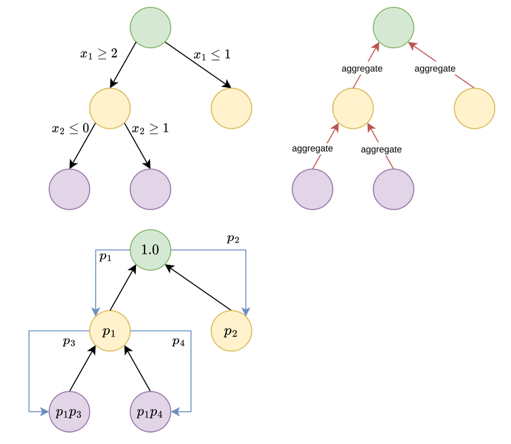

1 Introduction
The branch-and-bound algorithm is a fundamental solver for linear mixed integer programming problems. It is used to solve optimization problems with a combination of continuous and integer variables.
The algorithm works by relaxing the integrality constraints of the problem and then recursively partitioning the search space to identify the optimal solution. The algorithm first attempts to solve the problem without integrality constraints, before identifying variables that are intended to be integral and adding inequalities constraining the value to be either the rounded up or rounded down integer. This induces two subproblems, which can then be recursively solved in the same manner until either a solution is found or the resulting polyhedron is empty.
The effectiveness of the branch-and-bound algorithm lies in its ability to reduce the size of the search space by utilizing information on how optimal subproblems can possibly become. The algorithm keeps track of the best solution found so far and uses it to prune subproblems that cannot possibly contain a better solution. This technique, called bounding, reduces the size of the search space and speeds up the algorithm’s convergence.
For this to be efficient, the variable to be branched on and the node of the search tree to be expanded have to be chosen carefully, as quickly finding good solutions dramatically speeds up the search by allowing for more pruning. Focusing on node selection strategies, current methods tend to rely on manually created heuristics, like depth-first search, best bound search or best estimate search [SCI]. However, recently more interest has been put into learning such heuristics automatically, which might allow for much more efficient decision making.
There’s been some prior work in learning node selection strategies: [OD] considers the estimation of subproblem complexity for increasing the efficiency of parallelization. [YY21] utilizes imitation learning to directly select the proper node to explore, using a per-node set of features. [LCL] proposes the utilization of siamese graph neural networks in which each node is represented as a graph and the model imitates a diving oracle. [HIE] uses a support vector machines and imitiation learning on per-node features to produce a “hybrid” heuristic from the existing heuristics. [JLK21] uses a learned branching heuristic to verify neural networks by treating the networks themselves as graphs.
All of these approaches rely on per-node features, sometimes expanded by “global” information, such as the globally optimal solution. However, this modeling is inherently limiting, as the relative quality of two nodes cannot be used to make more informed decisions on branching. [LCL] tries to solve this using metric learning in the form of siamese networks, however here we still have minimal interactions between nodes as they only communicate through the final score and a singular global embedding containing the primal and dual estimate. A further limitation of these methods is their reliance on pure imitation learning, meaning that one can easily be limited by the low performance of the existing heuristics. Expanding this with reinforcement learning methods may lead to significantly increased performance, as these methods can attempt to tactically choose nodes that are not only optimal in the short term, but instead choose nodes with the expressed goal to increase the amount of information the algorithm has at its disposal to make better decisions later on in the search.
We propose to bi-simulate the branch-and-bound graph with a neural network (see fig 1). The neural network is trained to first aggregate information from its immediate children up towards the root node. This aggregation process creates an embedding for each node in the tree, which captures the relevant information about the node’s state and its children’s states. Once all embeddings are aggregated, the complete tree information can be used with a second neural network to pick nodes probabilistically.
The resulting model can be trained using either imitation or reinforcement learning to maximize the probability of choosing the correct node in the branch-and-bound tree. The tree induces a policy
\pi (left | current_node)
and
\pi (right | current_node),
whose probability distribution may be treated as a Bayesian graphical model and trained using methods like Proximal Policy Optimization (PPO) to predict the discounted sum of future rewards. These rewards may be designed to e.g., minimze search tree sizes.
Utilizing reinforcement learning rather than imitation learning prevents one from being limited by the existing policies’ quality. However, hybrid methods that first train an imitation policy based on the existing ones and then use reinforcement learning to further enhance the performance of the selection heuristic are also possible.
One possible advantage of this approach is that it can learn to exploit the problem structure and reduce the size of the search space more efficiently than traditional branch-and-bound methods. By learning a policy that selectively explores the most promising regions of the search space, the algorithm can significantly reduce the computation time needed to find an optimal solution.
Another possible advantage of this approach is its ability to generalize across different problem instances. Unlike traditional branch-and-bound methods that rely on domain-specific heuristics and rules, the learned policy can adapt to new problem instances and improve its performance with experience across domains.
Furthermore, the learned policy can also incorporate prior knowledge about the problem. For example, if a particular problem instance has some known structure or characteristics, the policy can be biased towards exploring regions that are likely to contain a good solution. This prior knowledge can be encoded in the form of additional inputs to the neural network, such as problem-specific features and constraints, or in the form of probabilistic priors as the node selection is inherently modeled as a probabilistic process.
The hope is that this compositional approach based on the tree structure gives strong signals than prior approaches, which, combined with the probabilistic reinforcement learning viewpoint, can outperform contemporary methods.

tree. Upper right: A neural tree built in accordance to the branch-and-bound
structure, aggregating information upward. Bottom left: using the aggregated
information, predict the node-selection probabilities downward.
2 Details
2.1 (Rough) Work Plan
- Week 1-2: initial implementation tree model
- Week 2-3: SCIP integration
- Week 3-4: study of different graph learning algorithms
- Week 5-6: testing on random instances of e.g. TSP
- Week 7-10: evaluating different training algorithms and evaluating different reward formulations
- Week 11-12: testing the generalization performance from small to large instances
- Week 13: testing on “official” benchmarks such as TSP
- Week 14-15: different problems/testing of model generalization
- Week 16: writing and additional tests (depending on prior results)
2.2 Evaluation and expected results
Objective is beating the current human expert heuristics on standard MILP benchmarks for TSP and related problems, such as e.g., TSPLIB http://comopt.ifi.uni-heidelberg.de/software/TSPLIB95/ or MIPLIB https://miplib.zib.de/. For this one can consider two orthogonal evaluations
- Time taken until solution is found
- given a fixed time budget, attempt to minimize the optimality gap
Both are useful for real world problems: The former as an estimate of “absolute” performance, while the other is important for fast solution generation in large scale or time critical situations. We would consider it a success if we were able to beat the human expert heuristics in either one of these tasks, with a focus on the latter evaluation scheme due to its more fine grained evaluation options: one can use the same (hard) problems and study the behavior as the time budget is increased, therefore allowing one to study the scaling behavior of the method.
2.3 Tasks
- implementation of tree heuristic
- integration with SCIP
- random instance generation
- training of heuristics models
- benchmarking
References
[1] He He, Hal Daume Iii, and Jason M Eisner. “Learning to Search in Branch and Bound Algorithms”. In: ().
[2] Florian Jaeckle, Jingyue Lu, and M. Pawan Kumar. Neural Network Branch-and-Bound for Neural Network Verification. July 2021. arXiv: 2107.12855 [cs]. (Visited on 04/18/2023).
[3] Abdel Ghani Labassi, Didier Ch´etelat, and Andrea Lodi. “Learning to Compare Nodes in Branch and Bound with Graph Neural Networks”. In: ().
[4] Lars Otten and Rina Dechter. “A Case Study in Complexity Estimation: Towards Parallel Branch-and-Bound over Graphical Models”. In: ().
[5] SCIP. SCIP Doxygen Documentation: Overview. https://www.scipopt.org/doc/html/index.php. (Visited on 04/18/2023).
[6] Kaan Yilmaz and Neil Yorke-Smith. “A Study of Learning Search Approximation in Mixed Integer Branch and Bound: Node Selection in SCIP”. In: AI 2.2 (Apr. 2021), pp. 150–178. issn: 2673-2688. doi: 10 . 3390 / ai2020010. arXiv: 2007.03948 [cs, math]. (Visited on 04/18/2023).